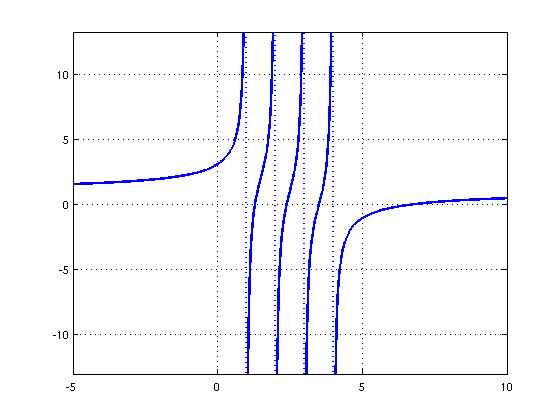
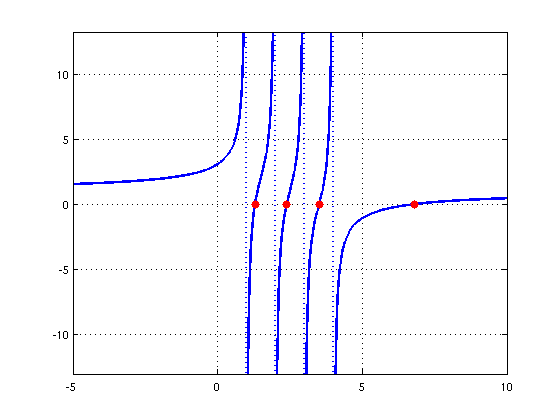

Roots of a secular equation with poles
Nick Trefethen, November 2010
(Chebfun example roots/SecularRoots.m)
Sometimes one needs to find the roots of a rational function expressed in partial fraction form, like this:
r(x) = 1 + SUM_j=0^N a_j/(b_j-x) .
For example, a "secular equation" of this kind arises in numerical linear algebra as part of the divide and conquer algorithm for computing eigenvalues of symmetric matrices (see [1] and p. 231 of [2]). If the coefficients a_j are positive and the poles b_j are distinct, then r must switch from +inf to -inf as x passes through each pole, and it follows that r has exactly N-1 real zeros lying between the poles and also one more real zero lying to the right of all the poles.
Here is an example with N=4:
x = chebfun('x',[-5 10]); for j = 1:4 f = 1 + 1./(1-x) + 1./(2-x) + 1./(3-x) + 1./(4-x); end hold off, plot(f,'linewidth',2), grid on
Chebfun can compute the roots:
r = roots(f)
r =
1.0000
1.2961
2.0000
2.3923
3.0000
3.5077
4.0000
6.8039
Notice that the result is 8 numbers, including the poles as well as the roots. This is because Chebfun's convention is to regard a function as having a root at any point where it crosses between positive and negative values.
Let us add the roots to the plot.
hold on, plot(r,f(r),'.r','markersize',24)
References:
[1] J. J. M. Cuppen, A divide and conquer method for the symmetric tridiagonal eigenproblem, Numerische Mathematik 36 (1980/81), 177-195.
[2] L. N. Trefethen and D. Bau, III, Numerical Linear Algebra, SIAM, 1997.